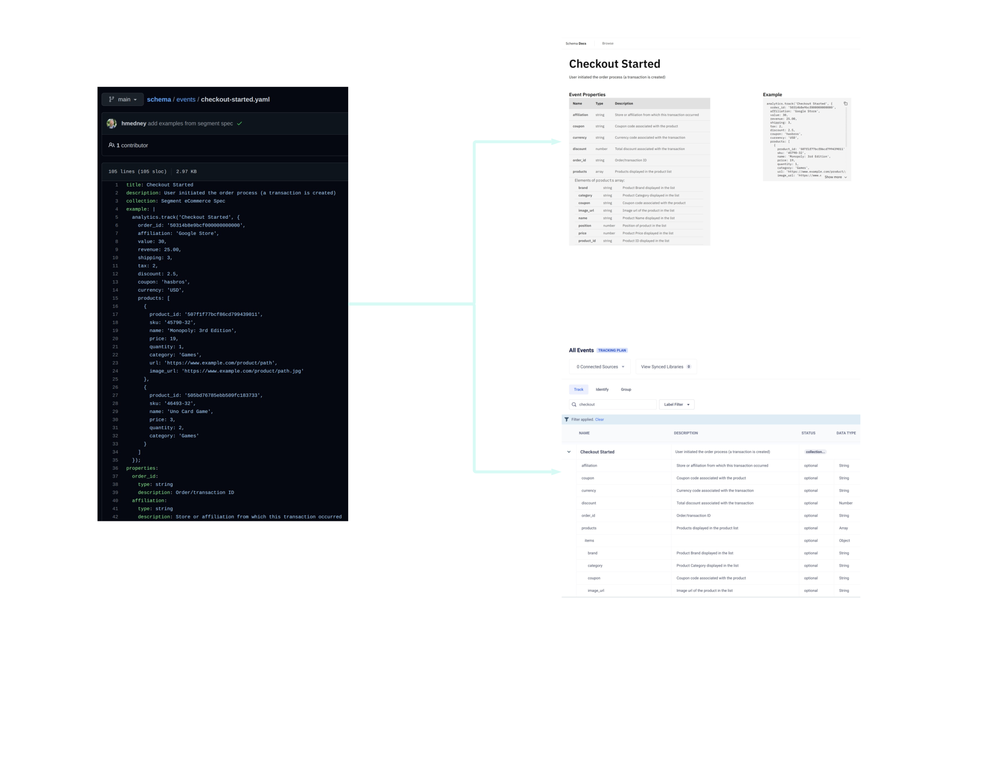

🍕 Slices with Segment
Improving data governance using software engineering best practices
Hunter Medney
Schema governance challenges
With so many stakeholders, how do we:
- Propose a schema change?
- Iterate on a schema change?
- Understand implications of a schema change?
- Review/approve a schema change?
- Roll-back a schema change?
- Keep an audit trail of each schema change?
- Ensure everyone has same version of the schema?
Schema governance challenges
With so many stakeholders, how do we:
- Propose a code change?
- Iterate on a code change?
- Understand implications of a code change?
- Review/approve a code change?
- Roll-back a code change?
- Keep an audit trail of each code change?
- Ensure everyone has same version of the code?
Treat data standards as code and manage with GitHub

Schema governance challenges solved!
Managing data standards as code
| Propose a schema change? | ➡️ | Create a Pull Request (PR) against schema repo |
| Iterate on a schema change? | ➡️ | Collaborate in PR comments |
| Understand implications of a schema change? | ➡️ | View Schema Impact Report in PR Checks |
| Review/approve a schema change? | ➡️ | Approve and merge the PR |
| Roll-back a schema change? | ➡️ | Revert the PR |
| Keep an audit trail of each schema change? | ➡️ | All changes in GitHub commit and PR history |
| Ensure everyone has same version of the code? | ➡️ | Build and deploy all schema artifacts on PR merge |
Documentation and tracking plans built from yaml files
Demo
Follow along in
https://github.com/hmedney-segment/schema
https://github.com/hmedney-segment/schema
Thank you 🙂
See you in #protocols in the Segment community Slack!